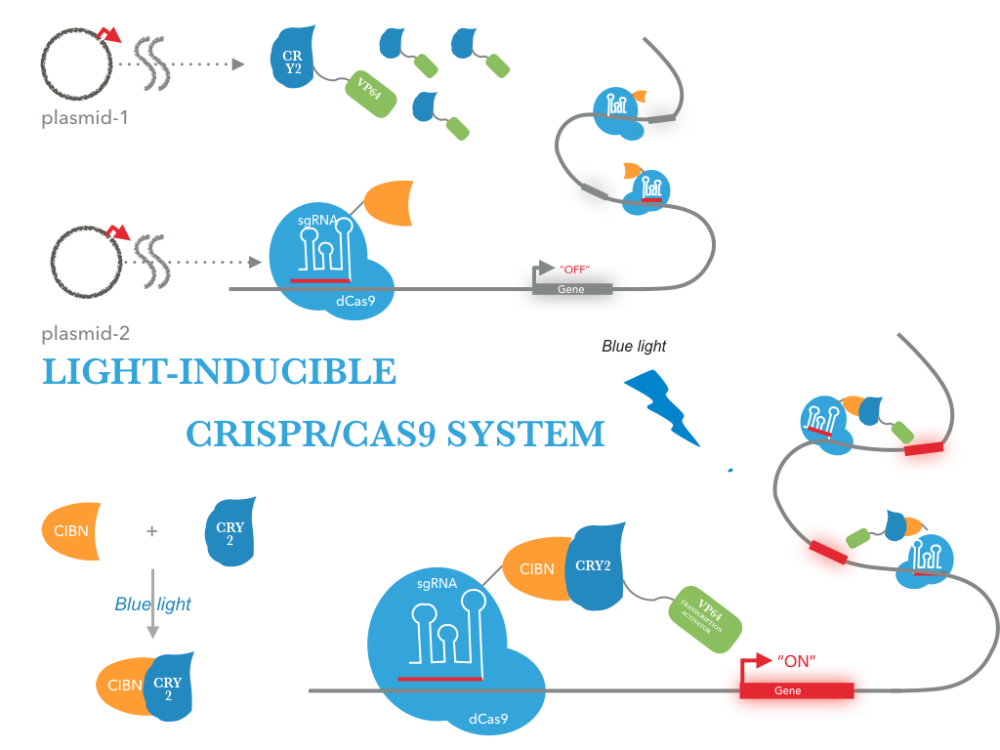

BioBricks for medal
Bronze
- We created 10 new BioBricks for bronze medal criterion. And have documented and submitted them to igem Registry.
- We introduce CRY2 (BBa_K1592015) and CIB1 (BBa_K1592016) of them.This biobrick is Key BioBrics in "Photoreceptor" project. CIB1 encodes a basic helix-loop-helix (bHLH) protein,would interact with cryptochrome 2 (CRY2), a blue light stimulated photoreceptor, when exposed to blue light.This fusion protein is for use in a yeast-two-hybrid system, and a Gal4 DNA activating domain fused to N terminus of CIB1. To regulate DNA transcription by blue light, the system is based on a two-hybrid interaction in which a light-mediated protein interaction brings together two halves (a binding domain and an activation domain) of a split transcription factor.
A light-activated CRISPR/Cas9 effector (LACE) system that induces transcription of endogenous genes in the presence of blue light.This was accomplished by fusing the light-inducible heterodimerizing proteins CRY2 and CIB1 to a transactivation domain and the catalytically inactive tCas9, respectively. The versatile LACE system can be easily directed to new DNA sequences for the dynamic regulation of endogenous genes.
Silver
We created 3 new BioBrick devices for silver medal criterion.
LACE device(BBa_K1982005 and BBa_K1982004)
The NEU-China iGEM team 2016 designed a fusion protein consisting of tCas9 and CIBN for sequence-specific transactivation of a desired target locus (more information). We used our double truncated tCas9 (BBa_K1982001) impaired in its cleavage activity and fused it to the CIBN (BBa_K1982003). An prokaryotic RBS sequence from the Community collection(BBa_B0034) fused to the beginning of tCas9-CIBN. For detection of expression the fusion protein was tagged with a HA-epitope coding sequence (BBa_K1150016) .

Figure 1 illustrates the detailed design of the whole device
Our new biobrick device worked as expected. Because we validate this fact by western blot analysis experimentally. We have documented and submitted this new Biobrick device(BBa_K1653024) to iGEM Registry.
Spatially controlled activation of gene expression was achieved in cells co-transfected with the LACE system ,a reporter vector containing gRNA target sequence upstream of a CSPA promoter and the GFP gene, and the expression plasmid for the corresponding gRNA.Cells transfected with LACE and incubated in the dark did not show a significant difference in eGFP levels compared to control cells transfected with empty plasmid
Activation of the eGFP reporter in cells transfected with the gRNA and LACE constructs, the gRNA and dCas9-VP64 expression plasmid, or an empty plasmid as a negative control was quantified by flow cytometry after 24 hours of illumination or incubation in the dark. The magnitude of the difference between cells in the light and in the dark was dependent on the threshold applied to the eGFP fluorescence intensity .
Result: The LACE system provides a straightforward and robust optogenetic method to regulate the expression of endogenous genes using the CRISPR/tCas9 system with spatial and temporal control. When co-transfected with gRNAs into mammalian cells that are stimulated with blue light, LACE produces a high level of transcriptional activation that is, in some cases, comparable to those observed with tCas9-VP64.